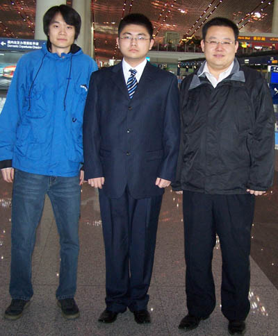
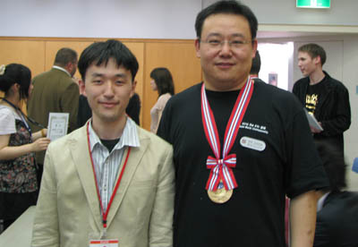
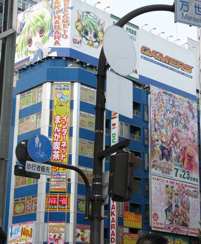
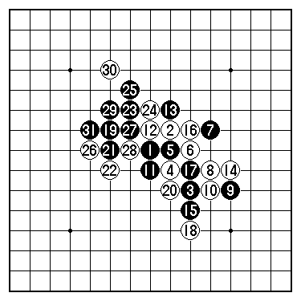

原文见中国连珠网
序言
四月初的一个周末，正在外面聚餐的我接到姚志勇老师的电话，叫我练棋准备世锦赛的时候，心情即激动又紧张，激动的是又可以得到一次高水平的锻炼，紧张的是团体赛是集体的力量，而自己长期没有系统的练棋，状态实在不敢说好！但随后那威老师打电话给我，除了表示对我的全力支持外，并减压的要我去打，说成绩的好坏不重要，努力就好！并说如果夺冠，他去闭幕式，说实话，当时内心真想说那老师您去闭幕式吧！
在后来的日子里，多多少少的准备了一下，并在周挥、姚志勇、孙立京等等连珠朋友的的大力支持与帮助下，我、曹冬、李一终于顺利的于29号早上上了去日本东京的飞机。
2010年4月29日星期四

飞机大约东京时间下午1点55点到的，出关的时候耽误了大约一个小时（填写了出关表格，而且他们对外国人的窗口数少。），幸好出来的时候，我一眼看见了石谷信一和举着连珠棋盘的男子（后来知道，他就是本次的中文翻译――董翻译）。于是下面就好办了，在石谷和翻译的带领下，我们做了一趟日本的城铁，感觉他们的车宽比我们北京的大点，不过旅途的劳累，使得自己没有太注意车外的风景，大约经过2多小时，我们终于来到了比赛地――代代木奥林比克青年中心
安排好房间后，稍事休息准备晚上的开幕式，其间，我见到了早来的中国队队员――奚振扬.
晚上，开了简短的开幕式，各个队分别自我介绍了队员及出场台次，并抽签决定了队号。中国队抽到2号还算是上上签的位置（对阵过程两头弱中间强）。根据抽编原则，日本两队和爱沙尼亚两队在首轮要相碰，而中国队首轮将迎战乌阿联队
中国队的台次事先大致是我和奚振扬三、四台，曹冬和李一前一、二台样子，我本来想田忌赛马如何，后来通过曹冬说明，本次比赛算各队成绩是每盘胜负的成绩总和，田忌赛马这招不太好使！哈哈。
最后在填表的时候，李一很坚决的想打一台，于是最后决定一台李一，二台曹冬，三台殷立成，四台奚振扬。
开幕式结束后，比赛经验丰富的我，让奚振扬问河村典彦裁判长，小组成绩带不带入决赛阶段，他明确的说不带，中华台北队的林黄羽也在一旁。这样我们就回住地休息去了。
［此帖子已被 有志青年 在 2010-6-20 12:58:52 编辑过］
2010年4月30日星期五
早上五点半，我被李一的身影恍醒（看样子，太兴奋了吧！北京时间是四点半呀！），而“神猪”级选手曹冬还在呼呼大睡！
首轮我们的对手是乌、阿联队。当我们进到比赛现场的时候，才发现乌、阿联队的第四台是空的，哈哈，奚振扬郁闷了！连热身的机会都没有！
自己小组赛第一轮的对手是乌、阿联队的阿塞拜疆选手NizamiHEYBATOV。实战前知道是自己开局，大约还是准备了一下，选择自认为可进到混战的开局，实战是雨月4打（A、B、5、 7）。对手在选择黑5时，我已经在考虑他白6在7位活三后的防守。但实战实在是太意外了，白6单纯防守！近乎于裸防！黑7位必然，白8弱防，自己感觉直接走在23位好些。黑9自由做棋！黑棋舒服！黑11是常见的好棋型！下一步瞄着12位的一子通三路的点，白12无奈！只得去抢12位，黑13活三，扩张棋势！白14无奈只能跟防。黑15做连接点，白16点是唯一防守点。黑17活三消除白棋12与16连二的潜在威胁。如果白18防守黑棋活三的下方，如参考变化图：黑追胜。黑19继续做连接，白20败招。防守在23位强！虽说黑会继续于29位做大优势，但白20的弱防导致了速败。黑棋以下追胜！
首轮的胜利，多多少少带给自己一些慰籍，不会光着头回家了！哈哈。
参考变化图
乌阿联队3台阿塞拜疆 NizamiHEYBATOV
下午迎战日本2队，想来日本本土作战可谓是精英尽出，听说2队是日本目前青年中的精英，并且我的对手长尾纪昭上午还把日本1队的冈部宽战胜，想来不弱吧！
实战，对手流星局一打（5），不知道是听冈部宽说的（去年我在捷克和他下过此局输了），还是自己熟悉（据说上午就是长星局胜的），不过的确是我不大熟悉的开局。哈哈，不过还好有办法，我疏星局比较不错。记得北京的崔悦当年长星局十分了得，但每每开出长星，大家都给变成疏星，愁得他只得去看疏星谱。
实战看见这个黑5我就很高兴，因为就是为了对付这个黑5，早在02年的首届全国赛上，为了对付饶肇平，我就特意准备实战的白6，自己感觉这样可以导入混战的局面，比走白6于12位的变化自己更加喜欢、更有把握。
黑7与白8交换正常，下一步是黑棋比较难的选择，当时感觉黑棋不是12的控制下法，就是10位的进攻下法。不想对手走了个实战的黑9，而这必然走成到13的局面，如此，黑有不死也被扒层皮的感觉，哈哈，反正白棋舒服就好！
16，白18是两步关联的好手，看黑棋防守的方向，而黑的选择很苦！
黑棋19的防守方向，使白棋进攻的区域瞄向了棋盘的右下。白20扩张的做棋，有点必胜宣言的感觉，黑21拼了！（应该说，黑棋虽说痛苦，但还需忍耐，或许还有机会）白22爽快的破坏掉黑棋的唯一希望，白24必胜！黑25最强防，以下白棋追胜！计算到胜利的时候心里好舒服！

［此帖子已被 有志青年 在 2010-6-20 13:01:39 编辑过］
2010年5月1日星期六
今天迎来世锦赛的中局阶段，也意味着难度的增大！
第三轮迎战日本1队，看着每个人的资料就知道很难打――长谷川一人九段（第5届世界个人赛A组冠军）、“战神”中村茂九段（前名人11连霸、前珠王、第1-2届世界个人赛A组冠军）、河村典彦九段（前名人、第4届世界个人赛A组冠军）、山口釉水九段（前名人、前珠王、第2届世界个人赛A组亚军、第9届世界个人赛A组季军）、矶部泰山九段（前名人）和在位珠王冈部宽八段。
而我的对手冈部宽，去年在捷克的世锦赛就下过一盘，意味这这盘是复仇之战。
实战浦月5打（10、11、21、5、A），哈哈，知识有点老了，赛后沟通得知似乎6打比较好！5打应该黑好！
双方至8是基本的应对，对于黑9的变化，事后听说是去年日本名人战的走法，只不过原来的实战黑13是B点，实战走的黑11，自己个人感觉没有原实战点好！应该说冈部宽离日本老一代棋手确实有差距。
白14，16防守得很正常，对于黑17的进攻，其实白棋第一感就C，本来说白虽苦，但还是能咬住对手，实战的18很大程度是情绪的产物，想一下控制住局面，感觉构成的眠三或许有防守利用，缺乏计算。
实战被黑19活三后，才感到眠三的无用，接下来的招法就简单了，自己又一次吞下了苦果，但我相信我们会四强再见的（赛后知道的，日本2砍了俄罗斯，而俄罗斯前一轮被台湾打和，这样俄罗斯危险了！我们进四强希望很大）。
日本1对3台冈部宽
下午迎来俄罗斯队，想来他们也不是来当陪客。
我对自己的对手不熟悉，缺乏对对手的了解，幸好是自己开，决定先下到中盘在慢慢找机会。
和第一盘一样，雨月4打，不过改了一个5（5、6、24、A），哈哈，这两天现学的，而且没学全，据奚振扬说，这个黑苦，不过我只记住他说的一点，死不了！）走到12可以说是这个5的基本定式。13做两二，应该说很正常，但这里却反映出欧亚分析局面的不同，他们理解是黑13似乎要先14位活三，如果不走，白棋就很想抢。实战就是这样，你不走，我走！
但这个局面在对日本2队的时候，曹冬走过，所以下面我根据他的实战下法下，实战到黑17活三，白棋改变，先冲四然后挡黑棋的活三。但很明显，黑局势优势了。实战，黑21控制白棋眠三，消除潜在的危险。白22弱防，走黑棋23位更强，那样黑棋的全局连接会被破坏！实战23后白24唯一，25活三后的27做棋，感觉白棋不在了，白28还是努力的防守了一步，黑29做棋后必胜了！
［此帖子已被 有志青年 在 2010-6-20 13:02:00 编辑过］
2010年5月2日星期日
第五轮了，上午迎战卫冕冠军队爱沙尼亚1队
赛前只知道前三台是爱队的强手，不过性格使然的我只知道强不强下了才知道。
实战对手开的浦月6打（A、B、34、5、7、6），自己选择交换，这是为了下自己的棋。面对白6，自己回想起昨天曹冬的浦月棋谱，于是黑7采取自己的风格――先控制住局面。13曾想走A位的，但感觉有损线路的感觉，于是选择实战的13直接来，保持着左右的连接。白14是温和的下法，激烈点可以走A位，就此一手也就定了我对AndryPurk棋路看法。
黑15、17直线进攻，其实这个时候我已经在构思黑棋5-29-31的眠三棋型，构成后感觉有必胜的味道，黑19黑21保持对白棋的控制，同时暗含对右边的支持，白22强手，虽说黑棋有长连的问题，但黑不惧怕。
黑23大失误！我的构思毁在这一步随手，可能长期没有下棋，下棋的那种紧张度不够。后续的白26与白24是关联的好手，白24破坏黑棋右侧的构思，白26防止了24让黑棋产生的左侧利用，当时我的心情真是愤怒了！（自己感觉这也就是下棋很有意思的地方，有情绪因素！）
27以下继续自己的构想，不过看来应该转为防守好！
白棋36好棋！计算的结果，体现出对手的风格以及计算能力。37与38属于鱼和熊掌的两点，但走38位黑棋会好点，直到此黑棋在才想防守，不过情况已经不妙了，以下的黑棋的招法，主要是希望通过进攻，能借出一些防守的帮助，但实际白棋防守得更好，黑棋的借出点很有限，当49黑棋死防时，应该说白棋优势极大，黑棋55以后的招法是继续寻找能否有借用的机会，当白68走后，白棋优势太大了，于是我投子认输了。
爱沙尼亚3台AndryPurk
下午，我、曹冬李一，在翻译的带领下，游逛了日本的秋叶原电子一条街！

2010年5月3日星期一
第六轮爱沙尼亚的2队，相对来说爱2是支弱队，是我们拿分的机会。
实战残月4打（7、13、24、5）走到黑11是基本定式，此时，白棋应走A是常见的点，实战中白棋变招，白棋选择活三，行至白16防守后，黑棋优势明显。
下面优势黑棋面临是如何处理，事后李一指出黑17走18位就必胜了，但缺乏研究的我，心想一旦怎么走，攻不死，将是白棋优势的局面，因而，采取了实战控制的下法，保持着攻守可选的策略！
白18应该说是强手，本以为会走成，白B黑18白C，而后黑D的攻击局面。但实战同样给了黑棋利用禁手的机会。黑棋19好棋，实战白20如走21位，黑棋走20位白棋无奈走E位，黑走F位优势过大，胜不难。实战白20位的下法，让黑转身走到23位，应该说黑棋成功将优势走了出来，黑棋必胜局面了。至黑29白棋投了。
爱沙尼亚2队3台MartinHobemagi
本轮结束后，经过计算，四强的队伍提前一轮产生了，而当我知道我们进入四强后，我内心高兴死了，至少完成了自己给自己的赛前目标――进四强！
下午的第七轮，这是小组赛最后一轮，赛前大家通过计算，已经知道四强产生了，所以大家都很高兴，面对这轮时都很轻松，比赛开始后，心态轻松的我只想通过攻击，观察对手如何应变，以待决赛阶段找出对手的弱点加以利用。
实战流星一打（5），我直接变成类似疏星的局面，可正当我下得悠闲的时候，李一突然走到身后告诉我要好好下，小组赛小分要带入决赛，突来的变故搞我晕了！于是我停下棋，找到日语翻译，一同找到河村典彦，我质问他在开幕式说不将小组小分带入，如今又带入是怎么一回事？他居然说他不记得自己说过这样的话！（听了，真是很愤怒！）我随后将安次和林黄羽叫在一起沟通此事，安次说根据rif章程小组积分是要带入决赛阶段，而且他和俄罗斯的尼科洛夫都是支持的，我当时就想俄罗斯都出四强了，他管你怎么比。（事后个人认为，安次要不就是有体育精神，要不就是已经算计好了，因为如此爱沙尼亚进入四强的位置很有力，估计后者成分很大！）但比赛还在继续，于是大家只得先比赛，而重新下棋的我，在心态上变化太乱了，走的点大部分都没怎么细想，实战白棋12转为防守，黑13疑问手！通过这手棋，我一下自了解了对手的实力！（高水平选手只要下过，无论输赢，你的强弱一下就会洞察出来，就像当年的曹冬在全国赛上算松月一打必胜，棋输了，但对手和大家一直认为他超强！这样的对手很多人是不喜欢的！）白20是败招，还是忍耐的走28位好！黑棋23好手！后面就黑棋必胜局面！

中华台北3台陈科翰
（第七轮的小分问题，使得自己都没和对手照相，借张晚宴时的高歌照吧！）
结束棋局的我没关心这盘的输赢，而是马上去找河村典彦继续沟通问题，他给了一份关于此次比赛的一份说明（事后林黄羽说和开幕式发的不同）。等林黄羽比赛结束后我找他沟通（奚振扬也是轻松开了自己不熟悉的开局死掉的），最后找到河村典彦沟通，最后得到的只能是河村典彦对他工作上的失误表示歉意！（无奈！）
接下来的四强赛不能吃亏了，于是我根据估算，中国队和中华台北队积分靠后，这样根据轮次表，四强赛两队会在最后相遇，这样无论怎么都是有利的情况，于是开四强会的我先跟林黄羽沟通好，开会时紧盯这个问题，不能让他们以中国和中华台北队为一个国家而先遇，不过稍晚的四强会议似乎他们没有注意到，于是按着正常的比赛顺序开赛。（笨死了，做活还不做得完美点！）
事后看这样的对阵很好，当中华台北队失去进军前三的机会时，使他们的心态完全“放松”了，而恰好要继续的对手是我们，而我们把握住了机会！
晚上，中国的老朋友三森政男先生和他的学生片光昭先生宴请了中国队的队员，大家在热情的气氛中畅所欲言！
2010年5月4日星期二
第八轮再遇帕克！信心十足的我开出疏星开局，十分自信的认为对手持黑攻不死我，而我无论黑白都有很大机会。
实战疏星一打（5），走至12是基本的定式棋型，13的选择属于后中先的控制走法，那一瞬间，激发了我攻击的欲望。白14攻守兼备，黑15如果它防，被白占到15黑棋有长连的不利，此时我开始长考，发觉白棋在右边局部没有局部胜棋，于是白棋活三后于18位控制局面，看黑如何表态！黑19疑问手！应该走21位强，白棋20做棋后黑棋还得走21位！这样白棋优势了，白22没于23位活三，主要是总受黑棋眠三的干扰，其次白棋在20时已经构思向左上连接发展了，实战黑23唯一，24与25的交换，先手控制右下局面，可放心大胆的在左上展开进攻，实战，26很不好！自己的心态太着急了！白26于28位选点，获胜的可能性极大，实战，的白26让黑棋损了A位的利用，白28是连贯的攻击动作，不过，赛后看还是走在29位走好！28过于直接！实战中，黑棋的29和后续的31防守很强很准确，此时，如何进攻需要好好判断，但自己自由的时间不多了，32的活三是不想损B的利用，34是想控制黑棋的眠三，至白36希望有一点机会，黑棋37后的直接破坏，其实是自己已经算到了，但时间太少了，没有想到更好的局面，白44防守黑棋的威胁，同时寻找机会于C的进攻，当黑45走后，自己记谱后很用心的判断了一下，防守在D什么棋都没有，还在想如何利用B点进攻时，帕克一指表，超时了！（哈哈，真忘了！）一旁的曹冬赛后说，看见我没落子只想在旁边踹我！好遗憾的结果！但万幸的是大家都胜了！哈哈，我们总成绩胜了！
第九轮复仇之战！中国古话说的好，事不过三！我怎么也不能输给刚不宽三盘呀！而且是怎么关键的一盘！
实战对手溪月7打（5、8、9、12、13、28、A）开局！哈哈，实话说不太会！白4是受俄爱比赛时的变化启发而走的，实战根据自己的理解留下实战点，本以为白6后黑棋于28防守，然后白棋在于B位行棋。实战的黑7感觉简单！被白8和白10后局面进入混战状态了，感觉白棋不差，或许实战的9走28位好！黑棋11唯一，白12顺手活三，黑13败招，当反方向，白棋无棋，13应该属于实战手，不过就算那样白棋继续抢占14位，黑棋局面依旧不利，实战白棋14一走就必胜了，哈哈！走完以后我就不断在穷尽防点，越想越高兴，看着刚不宽逐渐紧张，直至不断用手帕察汗，哈哈。心里偷着乐坏了！黑15最强了！白棋16做杀！17唯一！此时黑棋先于18位冲四，在挡在17可能制造出更乱的头绪！实战白棋18手跳活三，消除最后的黑棋可能，按着预定去抓黑的C点四四禁，这个早在14手时就算到了，实战白棋30活三后，黑棋认输！哈哈！好高兴！
2010年5月5日星期三
最后的一轮，决定冠军的日子到了，心情即紧张又兴奋，昨晚大家讨论一下今天的各种可能，感觉有机会，但必须自己先要大比分胜对手，这里面还有小花絮，晚上AivoOll过来玩，说道夺冠，AivoOll表示爱只要胜了日本1就卫冕了，哈哈，好心的李一忙纠正他的说法，并拿出纸笔给他算了一下，AivoOll听后恍然大悟！很冷静的说他要去找台湾的选手，事后据说没找到，因为台湾棋手被日、爱蹂躏后知道自己最好就是第四了，于是出去放松玩去了！哈哈。
实战我开疏星，通过第一盘和对手的较量，以及平时的接触，自信的感觉到只要能跟住对手，中后盘的机会是有的
实战开出疏星一打（5），对手交换，黑5的打点或许是对手熟悉的点吧，但感觉会进入到双方互控的局面，就看谁理解更好了！实战走到白12是常见的交换棋型，对黑棋13手，自己理解为不好，这个的不好很微妙，感觉是行棋方向的问题！14与15交换是常型，白16继续稳固的防守，黑17时，白18很想于20位的反击，但感觉风险太大，总归是定名次的比赛，于是走了实战的白18，想将战线拉长，19疑问手！黑棋失先！白20是为了22点的抢夺而作的铺垫，当黑21防守后，白如愿的抢到22位时，哈哈。自己高兴死了，认为胜定了！黑棋23防守！25怪异的防守了一点！自己的脑子一下就想到了实战的局面，忽视了黑棋39的防守，兴奋的我劈了啪啦的一通交换，引得AivoOll等人过来观看但到了白36后！哈哈，自己傻了！幸好发现挡在40位还没丢先手，还有机会，稍微的放松一下，不过对手可能受了我进攻受阻，以及精神上的泄气！自己则士气大振！走下了41手，陈科翰错误的认为后面黑棋必胜了！哈哈！那时乐死我了！于是
笑着走的42手！胜了！
比赛后AivoOll直说台湾对手下得太差了！
最后我们3.5比0.5大胜中华台北队，事后我对中华台北队分析，认为他们还不是很成熟，而进入到四强后的比赛，总共才得1分，说明他们进到四强后大失水准，不过相信，今后会成为一支劲敌！
我们的比赛结束后，因为日1和爱1的比赛还没结束，最后的结果尚不得知，于是我们和翻译一起出去吃日本本地的日海拉面去了！很好吃哦！
等我们回来看成绩时，看见长谷川一人和AivoOll的比赛场地门打开的，就进去问成绩，虽说我没有听明白在说什么（在说鸟语），不过我感觉气氛不对呀？AivoOll和长谷川一人都没有高兴的表情，我心里觉得我们有机会了！待问清楚最后的比分为2.5比1.5时，我们是冠军了！大家高兴极了，兴奋得李一和曹冬相拥庆贺！
闭幕式上我们举起了奖杯！
晚宴上冠军队是坐着照的像